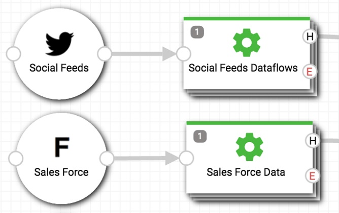
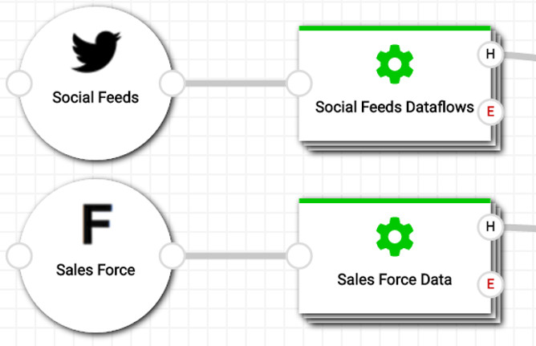
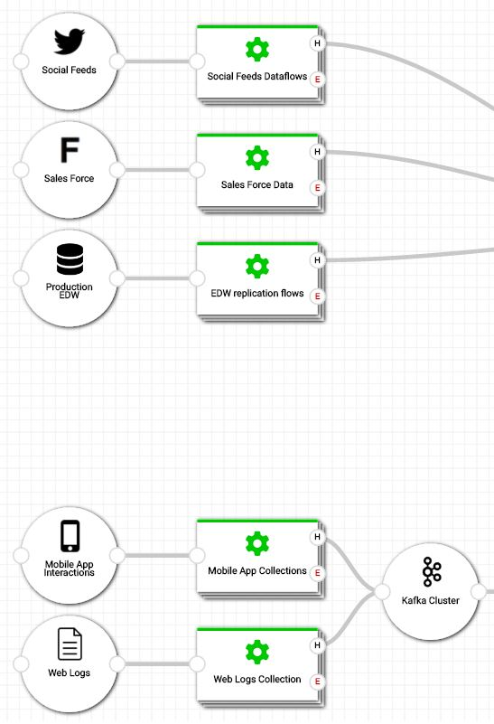
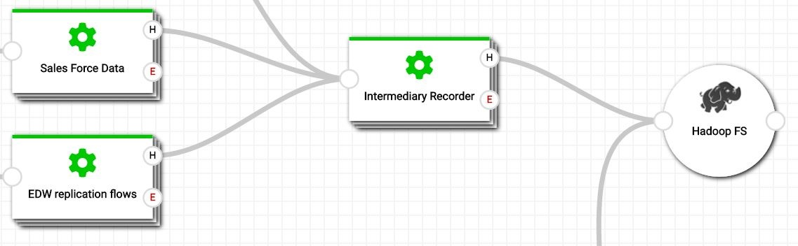
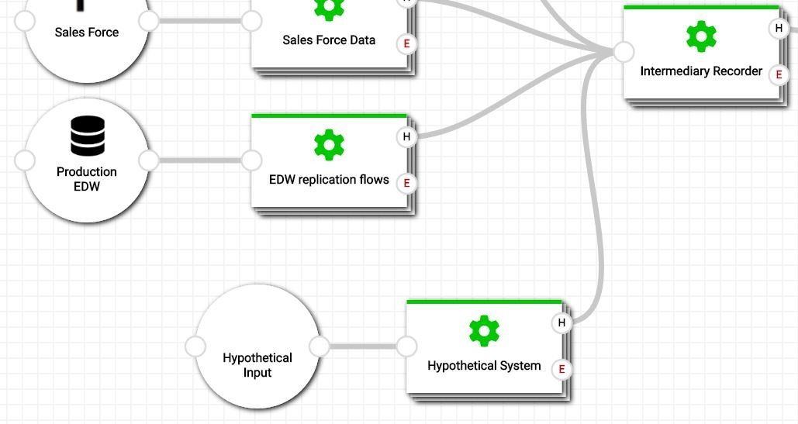

My name is Edson and i’m a Frontend Web Developer.
My career has led me through a multitude of challenges and experiences.
On my work in UNR, I built Graphical Reports that would interpret neuron voltage data using D3js. I coded in things that were important to me as a user, like snappiness, and customizability.
At RDM, i’ve written software that would replace $3k barcode scanners that ran like a mule through mud. I emulated the design and wrote server protocols that would interface with legacy PICK databases; software that would speed up production and operation because the user experience was now sleeker, snappier and easier on the eyes.
On the next step in my career, I would love to work with StreamSets, and here's why: the user interface experience is important, and I want to continue my work in this domain. This means user experience workflow, the presentation of information, and data visualization. StreamSets deals with all of them, and I love working on all of them equally.
I understand that StreamSets deals with data visualization, but I would like to throw an idea on the table: In addition to understanding data, can it be useful for users to customize their viewing experience as well?
I dove into a miniature project to showcase this idea I had about system component visualization. What if the user were allowed to prioritize and segregate modules in visualization? In addition to presentation, can a user move things around so they can better understand what they’re seeing?
I first set out to mimick the original system visualization.


In my project, I allowed the user to move modules around, so they can segregate systems by groups.

I also wanted to allow the user to plan, perhaps add hypothetical systems or intermediary’s.
Perhaps the user can add another layer with which to record data before that data proceeds to another system?

Or brainstorm hypothetical modules and simulate possible use cases.

I'm not well informed in the industry of systems visualization, but this project served as an idea I wanted to throw onto the table.
You can check out my project here, using SVG with D3js.
My website is also located here for other projects.
I enjoy Frontend. As I search for more opportunities and look for more cool projects to engage in, I want to find a job for me that will help me do what I enjoy doing.
Thank you for reading this letter.
Edson